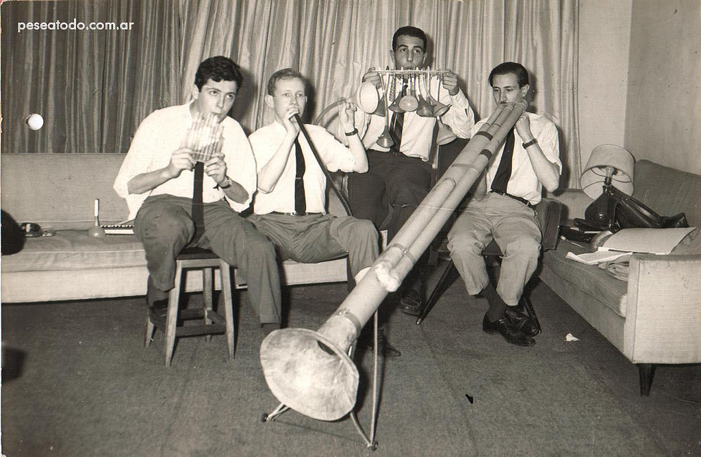

Gerardo Masana fundó el grupo el 4 de septiembre de 1967 en la ciudad de Buenos Aires durante un periodo de gran auge de los coros universitarios en Argentina con algunos miembros del coro clásico universitario I Musicisti. En sus primeros años fueron un cuarteto (Masana, Maronna, Mundstock y Rabinovich). Con la incorporación de Carlos Nuñez Cortés, formaron un quinteto, para luego ser un septeto al incorporarse Carlos López Puccio y Ernesto Acher en 1971; pasaron a ser un sexteto tras la muerte de Masana en 1973 y un quinteto al marchar Ernesto Acher en 1986. Precisamente, la formación más duradera de Les Luthiers fue la de quinteto, con Carlos López Puccio, Carlos Núñez Cortés, Jorge Maronna, Marcos Mundstock y Daniel Rabinovich, que se mantuvo sin cambios durante 29 años hasta el fallecimiento de Rabinovich en 2015. Asimismo, desde el año 2000 se agregó la labor de Horacio Turano y en 2012 Martín O'Connor como Luthiers suplentes cada vez que alguno de los miembros del quinteto titular debía ausentarse por causas de fuerza mayor. El último Luthier en incorporarse al equipo fue el actor de teatro y televisión Roberto Antier, quien si bien ya había sido probado en 2010, recién en 2015 consiguió ingresar como Luthier suplente, para finalmente tener su gran debut en 2019 en la obra Gran Reserva, donde reemplazó a Marcos Mundstock que estaba afectado por una parálisis en una pierna.10 Han recibido numerosos premios a lo largo de su carrera, entre ellos una mención especial en los Premios Konex, el premio Grammy Latino especial a la Excelencia Musical (EE. UU., 2011),1112 y la Orden de Isabel la Católica por su trayectoria (España, 2007). Han sido declarados ciudadanos ilustres de Buenos Aires y visitantes ilustres de muchas ciudades de Hispanoamérica. En 2012 el Reino de España les concedió la ciudadanía española por carta de naturaleza, una concesión especial a personas de particulares méritos. En 2017 ganan el Premio Princesa de Asturias de Comunicación y Humanidades coincidiendo con sus 50 años de carrera.
